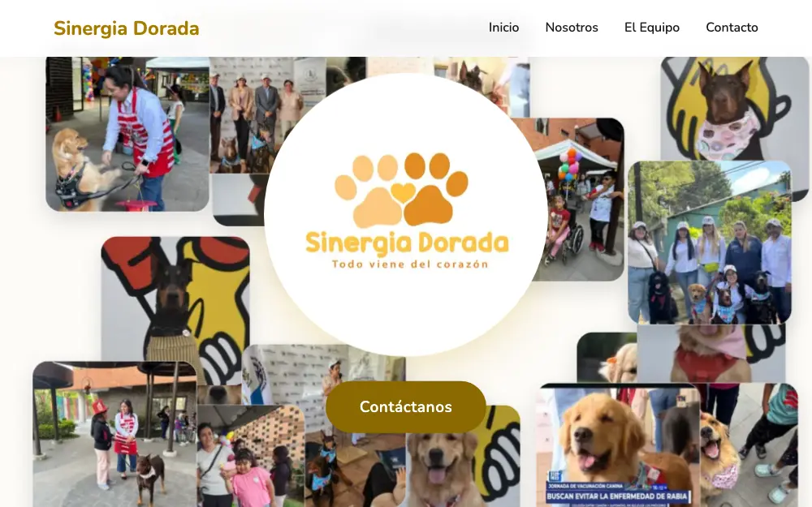

D—01 · Ejecución
HTML, CSS y JS sin framework
Sin tiempo de ejecución de framework ni plataforma de aplicación. El costo: coordinar el DOM requiere cuidado cuando crecen las funciones.
Ver código ↗Informe Técnico · Vol. 03 · 2026
Sinergia Dorada lleva terapia asistida con perros a comunidades de Guatemala. Su equipo puede actualizar el sitio sin ayuda de un desarrollador y sin servidores que mantener.
El reto
La organización necesitaba que sus voluntarios publicaran novedades, un costo de alojamiento casi nulo, rapidez en redes móviles, contenido accesible y ninguna cookie de seguimiento de terceros.
Arquitectura
Los datos estáticos se convierten en paquetes independientes para el navegador. CI revisa cada cambio antes de enviar archivos a S3 y CloudFront; el navegador recibe un sitio con caché y sin servidor de aplicación.
El diagrama, en lista
Cómo funciona
El JSON empaquetado con la página se muestra de inmediato como respaldo. Luego, el navegador consulta el JSON editable y actualiza la página. Las banderas de sección definen qué aparece; los paquetes independientes se comunican por medio del DOM.


Decisiones que se pueden defender
Cada decisión resuelve una necesidad y reconoce su costo. Las notas apuntan al código que la implementa.
D—01 · Ejecución
Sin tiempo de ejecución de framework ni plataforma de aplicación. El costo: coordinar el DOM requiere cuidado cuando crecen las funciones.
Ver código ↗D—02 · Contenido
Los archivos estructurados hacen que los cambios voluntarios se revisen en Git. El costo: las ediciones todavía pasan por un pull request.
Ver código ↗D—03 · Entrega
Dominio propio, HTTPS y HSTS, con redirección de www y caché por tipo de archivo. El costo: la configuración de despliegue vive en AWS.
Ver código ↗D—04 · Caché
Sin nombres con hash: el HTML se guarda 60 segundos, el código y contenido 5 minutos y los recursos estáticos 7 días. El costo: la política de caché requiere disciplina.
Ver código ↗D—05 · Privacidad
Sin Google Fonts ni solicitudes externas para cargar tipografías. El costo: hay que actualizar los recursos locales.
Ver código ↗D—06 · Monitoreo
Un subconjunto local del SDK se carga de forma diferida. El costo: los errores que ocurren antes de cargarlo no se reportan.
Ver código ↗D—07 · Cadena de suministro
Los workflows usan referencias de commit inmutables y main está protegida. El costo: las actualizaciones requieren revisión deliberada.
Ver código ↗D—08 · Imágenes
Fotos de perros ya redimensionadas reducen descargas en celulares. El costo: las imágenes de origen necesitan sus variantes.
Ver código ↗Calidad y seguridad
Las revisiones corren antes de fusionar y protegen esta arquitectura pequeña de regresiones silenciosas.
Cambios recientes
#83 · Base SEO
URL canónica, metadatos y datos estructurados.
#84 · Página 404
Una ruta útil para páginas inexistentes.
#85 · Contraste AA
Colores ajustados a los requisitos de contraste.
#86–87 · Rendimiento
Imágenes WebP, fuentes locales y carga móvil más rápida.
Principios
Que actualizarlo sea sencillo para quienes lo usan.
Infraestructura pequeña y fácil de explicar.
Una experiencia que funcione para más personas.
Detectar regresiones antes de que lleguen a visitas.
Contacto
Desarrollo sitios claros y confiables para equipos que hacen un trabajo valioso.
¿Tienes una oportunidad o una necesidad continua?
Conversemos ↗Cuéntame qué necesita tu organización.
Hablemos del proyecto ↗